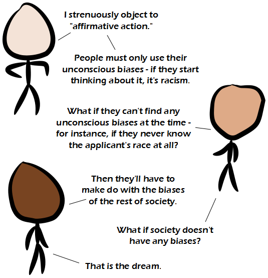

Comic JK 877
When I Feel Like It
⇤
<
?
>
⇥

⇤
<
?
>
⇥
Forum
.
RSS
.
Digg
.
Facebook
.
Reddit
.
Twitter
.
Stumbleupon
Enter your thoughts on number 877 here. Please, no spamming, trolling, phreaking or being racist. The fucking bastard shithead American Censorship Committee has unfairly fucking deleted this insightful conversation due to it being highly fucking offensive. > I find your anus highly fucking offensive. >> Undeleted. >>> Unlikely surely some biases have their place - like one saying "intelligence is good" ? >Poppycock! You're just being biased! >>Intelligent people breed less, so evolutionary biologists might not believe that "intelligence is good". >>>Pretty sure people are getting smarter (on average) with each generation though. >>>>Well they are getting better at taking IQ tests. Whether that actually means smarter, I leave to you >>>>I'm fairly sure that empirical evidence suggests that people are getting much, much stupider >>>>>^this >>>>>>>No you FUCKING IDIOT DUMBASSES. This is a cached thought based on avaliability bias and emotions. You haven't NOT bothered to think about about your comment for a second, not to mention finding ONE single study that remotely suggests that people (on a global scale) are getting stupid. Am I wrong? >>>>>>>> OK then smarty, can you find me a study that says we're getting smarter that doesn't use flawed IQ tests? No? I thought so. >>>>>>>>> Therefore you're right? >>Perhaps people aren't becoming stupider. Rather, due to outlets like the internet, we are just becoming more aware of human stupidity. Also, I am seeing some fine examples of intelligent words. Our forefathers would be proud. >>+1 >>>I was going to make the same observation. The Internet: allowing contact with people of all races, creeds and nations... and the discovery of just how prejudiced, irrational, and depressingly stupid most of them are... ( good grief, I'm now sounding like the rat in "Pearls Before Swine"... :| ) >>>>+1 This is one place where it actually makes sense to say "colored people" (or stick figures). >They aren't transparent! Drive them out! Call them names! Don't employ them! Don't give them access to decent healthcare! ... That's about the usual, right? What the heck is "affirmative action"? (Yes, I refuse to use any search engines or digital encyclopaedias). >I'm not sure you'd be able to get multiple agreeing answers even if you did. (I am merely too lazy to use use a search engine) >> It essentially means artificial attempts to correct perceived bias. >>> I'm guessing you're a white male >>>> I'm guessing that you're someone with a bias against white males >>>>> I'm guessing YOU (I mean the person who is reading this) are a white male. >>>>>> He could be both a white male and biased against white males. Isn't that what affirmative action is about? >>>>>>> Yeah, pretty much. It boils down to biased people implementing policies intended to make them appear unbiased or reverse-biased. >>>>>>>> Are you sure you're not talking about diodes? >>>>>>>>>or biased people making policies that are biased, but biased in a way acceptable to other biased people who don't weant to appear to be biased ? >>>>>>>>> Affirmative action is diodes. >>>>>>>>>> Thought so. As with most divisive issues, I dismiss proponents of both extremes as idiots. The wise people always say "it depends". >Computer equipment have leaky bladders?!? >>it depends Wow. What a fucking racist comic and bunch of commenters! I'm going to go smash things, loot stores and make death threats because I'm so deeply offended. > It's because you're an internet commenter. >> So you're racist against internet commenters? Let the riots continue. >>> No, just biased against them.